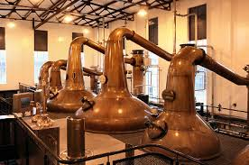
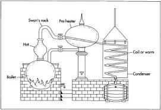

Pot Still Ирландско Уиски
 Специфичен вид ирландско уиски, сварен само в традиционни казани за дестилация, без смесване с дестилати от високи дестилационни колони. Изразът означава нещо подобно на “домашно сварено”, подобно на американското small batch whiskey, в малки серии, по традиционен метод. За него се използва за суровина или 100% малц за single malt или малц, смесен с ечемик (тоест смес от покълнал и непокълнал ечемик). Търсят се пропорции, които да придадат специфичен вкус. 